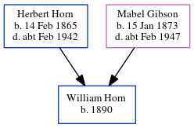

William Horn 1890 -
[ Home ] | [ Calendar ] | [ Surnames Index ] | [ Census Index ] | [ Family History ]The child of Herbert Horn (a carter) and Mabel Gibson, William Horn, the second cousin twice-removed on the father's side of Nigel Horne, was born in Bridge, Kent, England in 18901. On Mar 31, 1901, he was living at Grange Road, Margate, Kent, England1.
Parents
- Herbert James was born on Feb 14, 1865
- Mabel Ellen was born on Jan 15, 1873
Citations
- 1901 England, Wales & Scotland Census - Findmypast (was age 11 and the son of the head of the household)
Family Tree
Generated by ged2site. Last updated on Jun 11, 2024